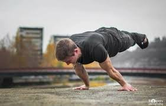
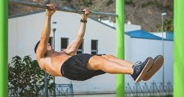
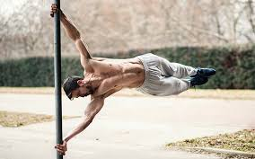

Además de ser una disciplina de entrenamiento que con el paso del tiempo está ganando mucha popularidad en el mundo de la actividad física (fitness), ahora se está considerando como deporte.[cita requerida]Mucha gente se unió a este tipo de ejercicios ya que no exige mucho tiempo y es muy económico, pues solo requiere del propio cuerpo para practicarlo.  También se puede considerar la disciplina de la Gimnasia Olímpica como el deporte que sentó las bases para la que sería más adelante la Calistenia, pues ambas disciplinas comparten muchas similitudes tanto en movimientos como en los entrenamientos para dominar la disciplina. Este tipo de entrenamiento, aparte de buscar un aumento de fuerza y músculo, también busca la posibilidad de optar por un rango más grande de movilidad y capacidad para controlar nuestro propio cuerpo.
 En el mundo antiguo, la calistenia se usaba como la principal fuente de preparación física para los militares, ya que era fácil de organizar, fácil de aprender y tenía la mayor transferencia a las habilidades y movimientos reales que necesitaban los soldados en combate. Algo que realmente se mantiene en la actualidad por su practicidad y aporte al poderío físico integral de los efectivos, combinado con los beneficios anteriormente mencionados.
 Los ejercicios realizados en calistenia se dividen en básicos (ejercicios comunes para el fortalecimiento de los músculos), estáticos (ejercicios avanzados que consisten en mantener una misma posición por algún periodo de tiempo, estos requieren mucha fuerza muscular y en tendones, mayormente en tendones por lo que son más difíciles de conseguir) y dinámicos (ejercicios avanzados que consisten en el movimiento y balanceo del cuerpo, se utilizan en "freestyle",2 aparte de fuerza requieren gran agilidad y reflejos).